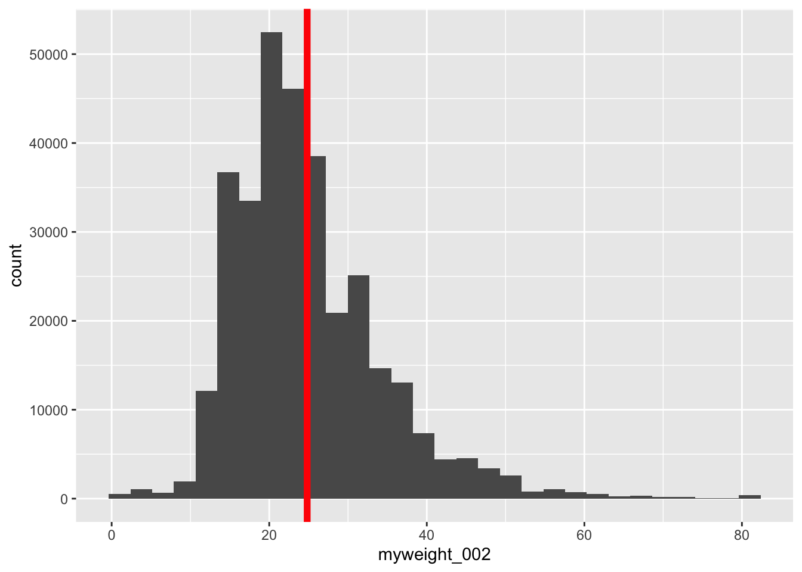
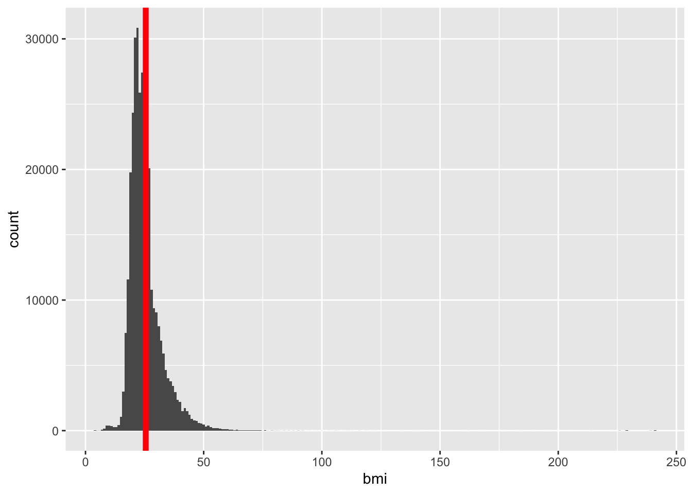

library(tidyverse)
library(gtsummary)
library(here)
if(!require(lubridate)) { install.packages("lubridate"); library(lubridate) }BMI Variable Help
BSTA 512/612
Link to github page for qmd file
Loading the needed packages:
Loading my IAT dataset (as it’s Rda file):
load(file = here("../TA_files/Project/data/IAT_data.rda"))Selecting the variables that I want to look at:
iat_prep = iat_2021_raw %>%
select(IAT_score = D_biep.Thin_Good_all,
att7, iam_001, identfat_001,
myweight_002, myheight_002,
identthin_001, controlother_001,
controlyou_001, mostpref_001,
important_001,
birthmonth, birthyear, month, year,
raceomb_002, raceombmulti, ethnicityomb,
edu, edu_14,
genderIdentity,
birthSex)Self-reported BMI
I started investigating the BMI because I was curious how the paper [@elran-barak2018] used it and just wanted to check reproducibility. There are a few issues with the self-reported BMI that immediately stuck out:
Components of BMI (weight and height) were self-reported
People told they are underweight often add pounds (REFERENCE)
People told they are overweight often subtract pounds (REFERENCE)
Raw data from weight and height are categorical. This is according to the codebook associated with this dataset. Please find your codebook file named
Weight_IAT_public_2021_codebook.csv. You can find the value names formyweight_002andmyheight_002.For example, in the weight variable,
most categories identify a lower limit to the weight in the group. One example group is weight is greater than or equal to 200 pounds and less than 205 pounds (labelled as “200 lb :: 91 kg”).
the first category for weight is “below 50lb:: 23kg” with 258 observations
the last category for weight is “above 440lb:: above 200kg” with 295 observations
- While the 5 groups of weight leading up the last category have 33, 28, 34, 20, and 89 observations, respectively.
My intention here is not the question anyone’s weight, but keep in mind that surveys sometimes have people selecting the first or last option because they are not taking the survey seriously
My exact steps
I wanted to get a table of the counts within each weight group. I used the
gtpackage to make a table of what I thought was a categorical variable. It looks like R interprets the numbered categories as numbers.iat_prep %>% dplyr::select(myweight_002) %>% tbl_summary()Characteristic N = 465,8861 myweight_002 23 (18, 29) Unknown 141,326 1 Median (Q1, Q3) I will first check the class of the variable to make sure R is doing what I think it’s doing.
class(iat_prep$myweight_002)[1] "integer"So R is interpreting the values as integers. I will need to make them categories to view them through
gtcommands.Let’s make it a category:
iat_prep2 = iat_prep %>% mutate(myweight = as.factor(myweight_002))Now we make the table:
iat_prep2 %>% dplyr::select(myweight) %>% tbl_summary()Characteristic N = 465,8861 myweight
1 258 (<0.1%) 2 257 (<0.1%) 3 329 (0.1%) 4 363 (0.1%) 5 379 (0.1%) 6 329 (0.1%) 7 327 (0.1%) 8 360 (0.1%) 9 589 (0.2%) 10 1,002 (0.3%) 11 2,180 (0.7%) 12 3,766 (1.2%) 13 6,175 (1.9%) 14 9,038 (2.8%) 15 12,068 (3.7%) 16 15,598 (4.8%) 17 16,007 (4.9%) 18 17,518 (5.4%) 19 19,093 (5.9%) 20 17,794 (5.5%) 21 15,599 (4.8%) 22 16,636 (5.1%) 23 14,854 (4.6%) 24 14,643 (4.5%) 25 13,510 (4.2%) 26 12,778 (3.9%) 27 12,243 (3.8%) 28 11,498 (3.5%) 29 9,414 (2.9%) 30 9,099 (2.8%) 31 7,274 (2.2%) 32 8,775 (2.7%) 33 4,691 (1.4%) 34 5,411 (1.7%) 35 4,595 (1.4%) 36 5,659 (1.7%) 37 3,494 (1.1%) 38 3,938 (1.2%) 39 2,489 (0.8%) 40 2,932 (0.9%) 41 1,941 (0.6%) 42 3,197 (1.0%) 43 1,244 (0.4%) 44 1,794 (0.6%) 45 1,442 (0.4%) 46 1,322 (0.4%) 47 1,251 (0.4%) 48 1,238 (0.4%) 49 900 (0.3%) 50 800 (0.2%) 51 651 (0.2%) 52 1,152 (0.4%) 53 347 (0.1%) 54 436 (0.1%) 55 346 (0.1%) 56 409 (0.1%) 57 295 (<0.1%) 58 384 (0.1%) 59 165 (<0.1%) 60 202 (<0.1%) 61 126 (<0.1%) 62 342 (0.1%) 63 92 (<0.1%) 64 154 (<0.1%) 65 129 (<0.1%) 66 113 (<0.1%) 67 139 (<0.1%) 68 85 (<0.1%) 69 85 (<0.1%) 70 55 (<0.1%) 71 65 (<0.1%) 72 120 (<0.1%) 73 26 (<0.1%) 74 26 (<0.1%) 75 26 (<0.1%) 76 33 (<0.1%) 77 28 (<0.1%) 78 34 (<0.1%) 79 20 (<0.1%) 80 89 (<0.1%) 81 295 (<0.1%) Unknown 141,326 1 n (%) The table is really long, so a histogram would work much better to visualize how many observations are in each category:
ggplot(data = iat_prep, aes(x = myweight_002)) + geom_histogram() + geom_vline(aes(xintercept = mean(iat_prep$myweight_002, na.rm = T)), color = "red", linewidth = 2)Warning: Use of `iat_prep$myweight_002` is discouraged. ℹ Use `myweight_002` instead.Warning: Removed 141326 rows containing non-finite outside the scale range (`stat_bin()`).
We need to convert the heights and weights to their cm and kg respectively. Since I only have a number category, I’ve gone into the codebook to find what each numbered category represents. If you put 8, you are 43 inches tall; 16:51 in; and 32:67in. Now I can use a line to see if I can create an equation to convert these values.
\[ \begin{align} in & = m\times cat+b \\ 43 &= m \times 8 + b \\ b & = 43-8m \\ \\ 51 &= 16m + b \\ 51 &= 16m + (43-8m) \\ m &=1 \\ b&=43-8m = 43-8=35 \\ \end{align} \]
Then we double check with third set of points:
\[ \begin{align} 67 & = 1 \times 32 + 35 \\ 67 & = 67 \\ \end{align} \]
iat_prep$myheight_in = 1*iat_prep$myheight_002 + 35Then we need to convert height to meters since BMI is in \(kg/m^2\).
iat_prep$myheight_m = 0.0254*iat_prep$myheight_inOkay, now we need to do something similar for weight. Three more points to find the conversion: 10:90lb; 20:140lb; and 30: 190lb.
\[ \begin{align} lb & = m\times cat+b \\ 90 &= m \times 10 + b \\ b & = 90-10m \\ \\ 140 &= 20m + b \\ 140 &= 20m + (90-10m) \\ m &=5 \\ b&=90-10m = 90-50=40 \\ \end{align} \]
Then we double check with third set of points:
\[ \begin{align} 190 & = 5 \times 30 + 40 \\ 190 & = 190 \\ \end{align} \]
iat_prep$myweight_lb = 5*iat_prep$myweight_002 + 40Then we need to convert height to meters since BMI is in \(kg/m^2\).
iat_prep$myweight_kg = 0.453592*iat_prep$myweight_lbiat_prep$bmi = iat_prep$myweight_kg/(iat_prep$myheight_m)^2ggplot(data = iat_prep, aes(x = bmi)) +
geom_histogram(binwidth = 1) +
geom_vline(aes(xintercept = mean(bmi,
na.rm = T)),
color = "red", linewidth = 2)Warning: Removed 142470 rows containing non-finite outside the scale range
(`stat_bin()`).
From histogram, looks like there are a couple observations at BMIs greater than 200. Let’s double check that.
summary(iat_prep$bmi) Min. 1st Qu. Median Mean 3rd Qu. Max. NA's
4.278 20.805 23.710 25.480 28.215 241.409 142470 Okay, so we now know the max is 241.41. I want to see the observations that have BMIs this large. I’ll take a look at their other values to see if there are any other issues.
iat_prep_bmi = iat_prep %>% filter(bmi > 200)
head(iat_prep_bmi, 10) IAT_score att7 iam_001 identfat_001 myweight_002 myheight_002
1 -0.61544208 4 1 5 81 2
2 0.54476890 1 6 2 80 1
3 0.70458996 1 2 3 80 2
4 0.28206698 6 7 1 81 1
5 0.33790313 5 7 3 81 2
6 1.23311171 1 7 4 80 2
7 -0.02357343 7 1 1 81 2
8 NA 7 1 1 81 2
9 0.33704837 4 1 1 81 2
10 -0.47687442 4 4 NA 81 1
identthin_001 controlother_001 controlyou_001 mostpref_001 important_001
1 1 5 5 4 5
2 3 4 4 3 1
3 3 3 2 4 5
4 5 1 1 6 5
5 4 3 2 1 4
6 1 5 1 1 2
7 5 1 1 2 5
8 5 1 5 7 5
9 5 1 1 4 4
10 NA NA 1 NA NA
birthmonth birthyear month year raceomb_002 raceombmulti ethnicityomb edu
1 12 1910 1 2021 8 [1,2,3,4,5,6,7] 1 12
2 12 2009 1 2021 4 1 1
3 10 1916 1 2021 4 1 1
4 11 1910 2 2021 NA 3 1
5 4 2007 2 2021 6 3 NA
6 5 2001 2 2021 6 2 5
7 2 1980 2 2021 8 [1,2,3,4,5,6,7] 1 9
8 NA NA 2 2021 NA NA NA
9 5 1976 2 2021 5 2 4
10 9 NA 2 2021 -999 NA NA
edu_14 genderIdentity birthSex myheight_in myheight_m myweight_lb
1 12 [2] 2 37 0.9398 445
2 1 [1] 1 36 0.9144 440
3 1 [1] 1 37 0.9398 440
4 1 [6] 2 36 0.9144 445
5 NA [1] 1 37 0.9398 445
6 5 [1] 1 37 0.9398 440
7 9 [1,2,3,4,5,6] 2 37 0.9398 445
8 NA NA 37 0.9398 445
9 4 [1] 1 37 0.9398 445
10 NA [2] 2 36 0.9144 445
myweight_kg bmi
1 201.8484 228.5359
2 199.5805 238.6963
3 199.5805 225.9681
4 201.8484 241.4087
5 201.8484 228.5359
6 199.5805 225.9681
7 201.8484 228.5359
8 201.8484 228.5359
9 201.8484 228.5359
10 201.8484 241.4087Looking at the subset of individuals with BMIs greater than 200, I am reminded that there is some serious quality control that needs to be done to this dataset. Other variable observations indicate that some of these rows are individuals who did not accurately fill out their survey. Right now, we keep them in our dataset, but we will need to examine them for outliers.
BMI Variable Help – Linear Models
BMI Variable Help – Linear Models
BMI Variable Help – Linear Models
Linear Models
BSTA 512/612
BSTA 512/612